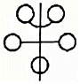
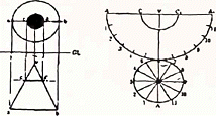
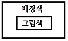
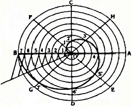
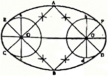

컴퓨터그래픽스운용기능사 (2015-10-10 기출문제)
1과목: 산업디자인 일반
1. 기하학적 추상 일러스트레이션의 설명 중 옳은 것은?
- 대상을 질서에 의하여 사실적으로 표현하는 것이다.
- 뒤선, 삼각형, 사각형, 원 등의 형태를 이용하는 것이다.
- 비구상적, 부정형적인 것을 말한다.
- 자연계에서 찾아볼 수 있는 형태를 이용한 것이다.
(정답률: 63%)

2. 오프셋(Offset) 인쇄에 대한 설명이 틀린 것은?
- 색채 표현성이 좋다.
- 색도수의 사용이 자유롭다.
- 대량 인쇄 시 비용이 저렴하다.
- 지폐나 유가증권 인쇄에 적합하다.
(정답률: 58%)
3. 통일된 이미지를 소비자에게 전달하기 위해 가장 고려해야 •하는 것은?
- 일러스트레이션
- 브랜드 네임
- 셀링 포인트
- 브랜드 아이덴티티
(정답률: 83%)
4. 광원에서 나온 빛을 천장이나 벽에 부딪혀 확산된 반사광으로 비추는 조명방식은?
- 직접조명
- 간접조명
- 전반확산조명
- 반직접조명
(정답률: 82%)
5. 물체의 표면이 가지는 성질로서 매끄럽다, 거칠다, 부드럽다, 딱딱하다 등의 느낌은?
- 양감
- 온도감
- 재질감
- 입체감
(정답률: 93%)
6. 기업의 디자인 매니지먼트와 거리가 가장 먼 것은?
- 디자인 프로젝트 관리
- 기업 이미지 관리
- 소비자의 생활양식 관리
- 디자인 전략 기획
(정답률: 86%)
7. 바우하우스에 대한 설명이 틀린 것은?
- 조형교육과 기술교육을 함께 가르쳤다.
- 1919년 월터 그로피우스가 설립한 디자인 대학이다.
- 대표적인 작가로는 헨리 반 데 벨데, 아더 맥머도 등이 있다.
- 공업 시스템과 예술가 사이의 갈등을 해결하려고 노력했다.
(정답률: 62%)
8. 인쇄 판식에 관한 설명 중 잘못된 것은?
- 평판 : 물과 기름의 반발 원리를 이용한 것으로 옵셋 인쇄가 대표적이다.
- 볼록판 : 화선부가 볼록부이며, 볼록부에만 잉크가 묻기 때문에 문자가 선명치 못하고 박력이 없다.
- 오목판 : 평평한 판면을 약품이나 조각으로 패이게 하는 방법으로 그라비어 인쇄가 대표적이다.
- 공판 : 인쇄하지 않을 부분의 구멍을 막아 제판하여 인쇄하며 인쇄량이 비교적 적은 인쇄에 사용된다.
(정답률: 66%)
9. 박물관, 대형마트, 뷔페식 식당 등의 실내 디자인 계획 시 공통적으로 고려해야 할 사항 중 가장 중요한 것은?
- 난간 및 계단은 설치하지 않는다.
- 동선의 역순과 교차를 고려한다.
- 사용자를 고려하여 간접 조명을 설치한다.
- 외부 빛의 유입 방안을 모색하여야 한다.
(정답률: 84%)
10. 래피드 프로토타이핑(rapid prototyping)에 관한 설명 중 옳은 것은 무엇인가?
- 디자이너가 제품의 평가척도를 만드는 데 필요한 도구
- 짧은 시간 내에 디자인의 실제 모델을 다양하게 만드는 방법
- 단기간 내에 디자인 기획을 수행할 수 있는 방법론
- 디자이너가 스케치를 통해 형태를 검토하는 방법
(정답률: 57%)
11. 아르누보 양식의 특징이 아닌 것은?
- 대칭
- 생동적
- 곡선적
- 여성적
(정답률: 73%)
12. 마케팅 활동에서 광고 관리를 위해 필요한 정보로 생활 스타일(Life style)은 어느 정보에 속하는가?
- 광고 정보
- 소비자 정보
- 시장 정보
- 환경 정보
(정답률: 78%)
13. 다음 중 이념적 형태에 해당하는 것은?
- 자연형태
- 인위형태
- 현실형태
- 순수형태
(정답률: 64%)
14. 게슈탈트 요인 중 벌어진 도형을 완결시켜 보려는 경향을 갖는 것은?
- 근접성의 법칙
- 방향성의 법칙
- 유사성의 법칙
- 폐쇄성의 법칙
(정답률: 72%)
15. 실내 디자인에 드는 비용을 최소화하는 방안으로 틀린 것은?
- 시설비를 줄인다.
- 천장이나 벽면에는 요철을 적게 한다.
- 표준화된 치수의 제품과 규격화된 기성품을 활용한다.
- 실내 디자인의 효과를 높이기 위해서는 구입비와 유지 관리비를 최대한 많이 책정한다.
(정답률: 90%)
16. 브레인스토밍에 대한 설명 중 가장 거리가 먼 것은?
- 오스본에 의해 1930년대 후반에 제안된 아이디어 발상법이다.
- 토의 그룹을 만들어 제약이 없는 상태에서 자유롭게 아이디어를 내는 방법이다.
- 각자의 아이디어를 토의를 통해 선별하고 기존의 아이디어를 보완하는 역할로 사용된다.
- 이 방법을 진행하는 데 필요한 기본원칙에는 비평은 금물, 많은 양의 아이디어 요구 등이 있다.
(정답률: 71%)
17. 디자인의 조형요소가 아닌 것은?
- 형
- 색채
- 균형
- 질감
(정답률: 56%)
18. 4차원의 디자인에 속하는 것은?
- 일러스트레이션
- 그래픽디자인
- 애니메이션
- 디스플레이 디자인
(정답률: 51%)
19. 디자인의 궁극적인 목적을 가장 바르게 기술한 것은?
- 용도나 기능을 목표로 하는 생산행위에 목적이 있다.
- 인간의 행복을 위한 물질적 생활환경의 개선 및 창조를 목적으로 한다.
- 대중의 미의식보다는 개인의 취향을 전제로 디자인하는 데 목적이 있다.
- 경제 발전에만 치중한다.
(정답률: 91%)
20. 다음 그림과 같은 대칭은?

- 역대칭
- 방사대칭
- 점대칭
- 선대칭
(정답률: 82%)
2과목: 색채 및 도법
21. 제 3각법에서 눈과 물체, 투상면의 순서가 올바른 것은?
- 눈→물체→투상면
- 투상면→물체→눈
- 물체→눈→투상면
- 눈→ 투상면→ 물체
(정답률: 69%)
22. 선의 종류 중 절단면을 나타내는 선은?
- 해칭선
- 파선
- 피치선
- 지시선
(정답률: 60%)
23. 점을 찍어가며 그림을 그린 인상파 화가들의 그림과 관련된 혼합은?
- 가산혼합
- 감산혼합
- 병치혼합
- 회전혼합
(정답률: 71%)
24. 입체를 평면에 평행인 평면으로 절단하였을 때의 투상도와 전개도이다. 어떤 입체를 절단한 것인가?

- 원통
- 구
- 원뿔대
- 삼각뿔
(정답률: 77%)
25. 다음 중 단색광(monochromatic light)을 바르게 설명한 것은?
- 가장 짧은 파장의 광선
- 두 단색광을 합하여 백색광이 되는 광선
- 눈에 보이지 않는 광선
- 더 이상 분광될 수 없는 광선
(정답률: 59%)
26. 배색의 효과에 대한 설명으로 거리가 먼 것은?
- 고명도의 색을 좁게 하고 저명도의 색을 넓게 하면 명시도가 높아 보인다.
- 같은 명도의 색이라도 면적이 커지면 고명도로 보이고 밝아 보인다.
- 같은 채도의 색이라도 면적이 작아지면 저채도로 보이고 탁하게 보인다.
- 같은 명도의 색이라도 면적이 작아지면 고명도로 보인다.
(정답률: 61%)
27. 투시도의 종류에 해당되지 않는 것은?
- 평행투시도
- 투상투시도
- 사각투시도
- 유각투시도
(정답률: 54%)
28. 유사 색조의 배색에서 받는 느낌은?
- 강함, 똑똑함, 생생함, 활기참
- 평화적임, 안정됨, 차분함
- 동적임, 화려함, 적극적임
- 예리함, 자극적임, 온화함
(정답률: 83%)
29. 어두운 상태에서 우리 눈의 간상체가 지각할 수 있는 색은?
- 황색
- 회색
- 청색
- 적색
(정답률: 52%)
30. 배경 색이 N4이고, 그림색이 5YR 8/4일 경우 그림색은 어떻게 보이는가?

- 어둡게 느껴진다.
- 강하게 부각된다.
- 희미하게 부각된다.
- 더욱 탁하게 느껴진다.
(정답률: 74%)
31. 다음 그림과 같은 곡선은?

- 인벌류트 곡선 그리기
- 등간격으로 나사선 그리기
- 아르키메데스 나사선 그리기
- 하트형 응용곡선 그리기
(정답률: 68%)
32. 파장이 가장 긴 색과 짧은 색이 맞게 짝지어진 것은?
- 빨강과 주황
- 빨강과 남색
- 빨강과 보라
- 노랑과 초록
(정답률: 67%)
33. 먼셀 표색계의 채도에 대한 설명 중 틀린 것은?
- 채도는 색상의 강약을 말한다.
- 채도는 색상이 있을 때만 나타난다.
- 순색은 한 색상에서 무채색의 포함량이 가장 적은 채도의 색을 말한다.
- 모든 색상의 채도단계는 동일하다.
(정답률: 73%)
34. 조감도는 소점이 몇 개 인가?
- 1개
- 2개
- 3개
- 4개
(정답률: 62%)
35. 심리적으로 가장 마음을 안정시키는 색은?
- 5Y 6/8
- 5G 4/6
- 5R 5/10
- 5YR 3/6
(정답률: 73%)
36. 다음 중 성 격 이 다른 하나는?
- 혼색효과
- 전파효과
- 동일효과
- 줄눈효과
(정답률: 41%)
37. 물체가 없어진 후에도 얼마 동안 상이 남아 있는 현상은?
- 상상
- 환상
- 잔상
- 추상
(정답률: 92%)
38. 다음 도형은 무엇을 구하기 위한 것인가?

- 두 원을 격리시킨 타원 그리기
- 두 원을 연접시킨 타원 그리기
- 장축과 단축이 주어진 타원 그리기
- 4중심법에 의한 타원 그리기
(정답률: 56%)
39. 다음 색 중 보색관계로 짝지어진 것은?
- 5R – 5BG
- 10Y - 10RP
- 5B – 10YR
- 5P - 10GY
(정답률: 59%)
40. 도면을 내용에 따라 분류할 때 해당되지 않는 것은?
- 계통도
- 설명도
- 배치도
- 외형도
(정답률: 48%)
3과목: 디자인 재료
41. 물을 용제로 사용하는 도료는?
- 에멀션 도료
- 페놀 수지 도료
- 프탈산 수지 도료
- 에폭시 수지 도료
(정답률: 51%)
42. 필름의 감도표시가 아닌 것은?
- ISO
- DIN
- ASA
- KS
(정답률: 70%)
43. 포스터컬러의 특성에 관한 설명 중 잘못된 것은?
- 불투명하고, 은폐력과 접착력이 강해야 한다.
- 색상이 밝고 정확하며, 광택이 없어야 한다.
- 입자가 세밀하고 고르며, 매끈하게 칠해져야 한다.
- 건조된 후에는 칠할 때의 색보다 또렷해야 한다.
(정답률: 51%)
44. 다음 재료 중 가볍고 표면의 산화 피막 때문에 내식성이 좋으며, 철강 다음으로 사용량이 많은 금속은?
- 납
- 아연
- 구리
- 알루미늄
(정답률: 71%)
45. 한지의 용도에 따른 분류에 해당하는 것은?
- 화선지
- 닥종이
- 송엽지
- 유목지
(정답률: 71%)
46. 유기재료 중 대량생산에 가장 많이 사용되는 것은?
- 목재
- 가죽
- 볏짚
- 플라스틱
(정답률: 72%)
47. 목재의 물리적 성질에 대한 설명으로 옳은 것은?
- 인장강도 - 목재에 압력을 가할 때의 내부 저항력
- 압축강도 - 마멸에 대한 내부 저항력
- 경도 - 목재를 잡아끄는 외력에 대한 내부 저항력
- 전단강도 - 목재의 일부를 남은 부분 위에 올려놓았을 때, 이 단면에 평행하게 작용하는 저항력
(정답률: 47%)
48. 종이를 서로 붙여서 두꺼운 판지 또는 골판지를 만드는 가공방법을 무엇이라 하는가?
- 도피가공
- 배접가공
- 흡수가공
- 변성가공
(정답률: 83%)
4과목: 컴퓨터 그래픽스
49. 3D 입 체 프로그램에서 매핑(Mapping)을 가장 잘 설명한 것은?
- 2D 이미지를 3D 오브젝트 표면에 입히는 것
- 2D로 된 지도나 도형을 3D 입체로 전환하는 것
- 3D 입체물을 여러 각도에서 단면을 볼 수 있도록 2D의 수치를 기입하는 것
- Extrude한 입체를 다시 한 번 Revolve 시키는 것
(정답률: 64%)
50. 비트맵 이미지의 특징으로 거리가 먼 것은?
- 깊이 있는 색조와 부드러운 질감을 나타낼 수 있다.
- 이미지의 크기에 따라 출력에 영향을 준다.
- 압축을 통해 해상도와 파일크기의 조절이 가능하다.
- 베지어 곡선의 오브젝트로 구성된다.
(정답률: 64%)
51. 다음 중 고라우드(Gouraud) 셰이딩 보다 부드럽고 좋은 질의 화상을 얻을 수 있으며, 부드러운 곡선 표면의 물체에 적용하는 셰이딩 기법은?
- 플랫 셰이딩(Flat Shading)
- 레이 트레이싱(Ray Tracing)
- 퐁 셰이딩(Phong Shading)
- 리플렉션(Reflection)
(정답률: 62%)
52. 다음 중 픽셀(Pixel)에 대한 설명 중 틀린 것은?
- 1Pixel에 8비트를 할당하면 8색이 표현된다.
- 1Pixel에 16비트를 할당하면 65,536색이 표현된다.
- 수백만 색상 이상을 표현하려면 1Pixel에 24비트를 할당해야 한다.
- 1680만 색상의 표현이 가능하면 트루 컬러라고 부른다.
(정답률: 63%)
53. 실제 또는 가상의 동적 시스템 모형을 컴퓨터를 사용하여 연구하는 것은?
- 렌더링(Rendering)
- 과학적 시각화(Scientific Visualization)
- 시뮬레이션(Simulation)
- 캐드 캠(CAD CAM)
(정답률: 77%)
54. 컬러사진 필름의 네거티브 필름 이미지를 인화지로 인화하면 색이 보색으로 표현된다. 이와 같은 포토샵의 기능은?
- Equalize
- Threshold
- Variations
- Invert
(정답률: 60%)
55. 다음 중 입력장치에 해당되는 컴퓨터 그래픽 시스템은?
- 프로젝트
- 프린터
- 스캐너
- 플로터
(정답률: 69%)
56. RGB 모드 색상에 관한 설명 중 틀린 것은?
- 혼합될수록 어두워지는 감산혼합이다.
- 영상 이미지 또는 TV 등의 컬러 처리를 수행한다.
- 빛의 3원색이라고도 한다.
- 최대의 강도로 3가지 색의 빛이 겹칠 때 흰색으로 보인다.
(정답률: 75%)
57. 컴퓨터그래픽에서 3차원 입체 형상 모델링의 표현 방식이 아닌 것은?
- 와이어프레임 모델링(Wireframe Modeling)
- 서페이스 모델링(surface Modeling)
- 솔리드 모델링(Solid Modeling)
- 목업 모델링(Mock-up Modeling)
(정답률: 64%)
58. 포토샵에서 CMYK 모드로 작업할 때 활성화되지 않아 실행할 수 없는 필터는?
- Gaussian Blur
- Sharpen Edges
- Difference Clouds
- Lighting Effects
(정답률: 60%)
59. 아날로그 화상을 디지털 화상으로 전환하는 장치가 아닌 것은?
- 디지털카메라
- 필름 레코더
- 모션캡쳐
- 스캐너
(정답률: 51%)
60. 매킨토시나 윈도우 환경에서 광범위하게 사용되며 높은 압축률로 웹용 이미지로 많이 사용되는 그래픽 이미지 압축 포맷 방식은?
- TIFF
- EPS
- JPEG
- BMP
(정답률: 68%)